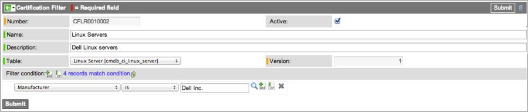
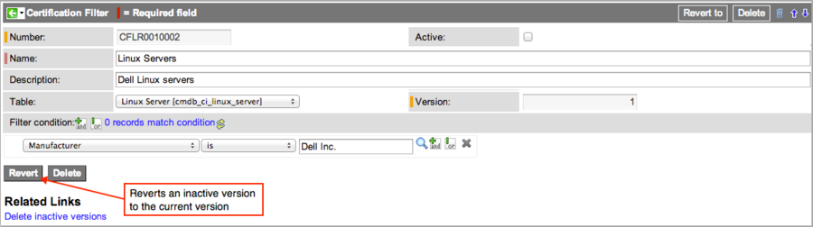
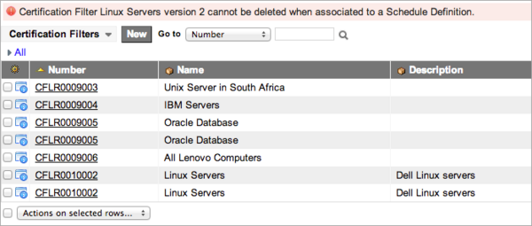
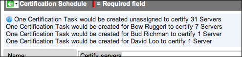
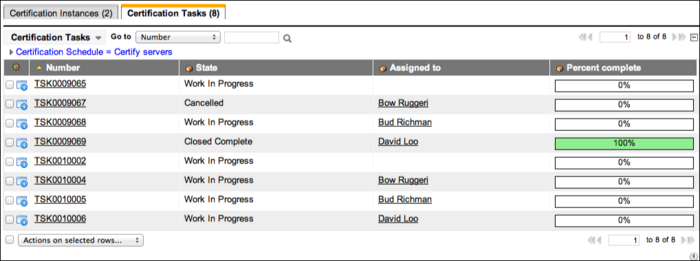

Planning Data Certification
Contents
1 Overview
Initial planning can make the certification process more successful. By defining certification schedules and certification audit definitions, users with the certification_admin role establish when certifications are performed, who performs it, and what data must be certified.
2 Required Roles
Users with the certification_admin role can view filter versions. These users can create, update, and delete filters, if they have the proper access to necessary tables. In the base ServiceNow system, certification_admin users have limited system rights and might not have access to all the tables required for creating a filter. When assigning compliance resources, make sure to grant additional roles to the certification_admin user as needed. For example, this user might need roles that grant access to these tables:
- Company [core_company]
- Cost Center [cmn_cost_center]
- Schedule [cmn_schedule]
3 Planning Data Certification
Planning the data certification process requires defining the following:
- The certification schedule defines certification for a particular set of information on a particular table. It also generates certification tasks to perform that certification. One certification task is generated per task owner and the tasks are grouped together by a certification instance record.
- The optional certification audit definition groups a number of certification schedules to be performed together and generates certification audit instances to perform them.
The following questions should be answered for each certification schedule:
- What information needs to be certified?
- When is the due date by which the information needs to be certified?
- Who must perform the certification?
4 Creating Certification Filters
A filter is a subset of configuration items from any ServiceNow table that is created with a standard condition builder. An example is a filter that selects all UNIX servers in the Australian data center. This procedure is for versions starting with the Dublin release. To create filters in earlier versions, expand the procedures at the bottom of this section.
With filters, you can:
- Create multiple versions of a filter and then select the version you want to use.
- Use one filter on multiple certification schedules.
- View the number of records that match your filter as you create the conditions.
| |
Note: Be sure to create certification filters before creating certification schedules. |
- Navigate to Data Certification > Certification Filters.
- Click New.
- Fill in the form (see table).
- Click Submit.
- This action saves the filter as version 1.
- 
- To create another filter version, modify the filter conditions and click Update.
- To make an inactive filter the current version, open the inactive filter and click Revert.
- 
- This action creates a new, active version of the filter and makes all previous versions inactive.
- To delete a single filter version, open that version record and click Delete.
- To delete all versions of a filter, click Delete all versions under Related Links in that filter record.
- You cannot delete a filter that is used in a schedule definition. The system displays a warning and the filter is not deleted.
- 
{kind=link}
{kind=link}
{kind=link}
{kind=link}
{kind=link}
| Field | Description |
|---|---|
| Name | [Required] Filter name. |
| Description | [Optional] Brief description of the filter. |
| Number | [Read-only] Automatically assigned filter identification number. |
| Table | Table containing the records to be filtered. Use of the Database View [sys_db_view] table is limited by version. |
| Active | Control to make the filter available for use from the Filter field on the Certification Schedule form. |
| Version | Current version of this filter. Any significant changes to the filter make the current version inactive. The system copies the updated filter, marks it as active, and increments the version number. The system saves all versions of the filter and makes them available to users. More than one version of a filter can be marked active. |
| Filter condition | Field, operator, and value to create the condition. The available options depend on the table selected. You can view the number of records that match the filter by clicking the refresh icon |
| Certification filters for versions prior to Dublin | ||||||||||||
|---|---|---|---|---|---|---|---|---|---|---|---|---|
|
A filter is a subset of configuration items of a certain type, for example, all UNIX servers in the Australia datacenter. Create certification filters before creating certification schedules. Filters can be specified on any table and with any set of system-supported conditions. The filters can be reused on multiple certification schedules. Certification filters are available starting with the Calgary release.
|
5 Defining a Certification Schedule
A certification schedule specifies the fields to display, the fields that require certification, to whom certification tasks should be assigned, how much time the task owners have to complete their work, how often the schedule should run, and any detailed instructions for task owners.
Use the preview option to see what tasks will be created before saving the schedule. If the tasks are not what you want, edit the schedule and preview the tasks again. The system creates certification tasks automatically when it executes a schedule.
To schedule a certification:
- Navigate to Data Certification > Schedule Definitions.
- Click New.
- Fill in the fields (see table).
- Click Submit.
| Field | Description |
|---|---|
| Name | A schedule name. |
| Filter | A certification filter for this schedule. This functionality is available starting with the Dublin release. |
| Table | [Read-only] The table holding the records to be certified. To change the table name, select a different Filter or create a new Filter. |
| Display fields | The fields displayed in the Certification Task list to provide context. These do not require certification themselves. For example, although users might not be required to certify the Name field of a record, it should be displayed so that users know what record they are certifying. |
| Certification fields | The fields to certify on this certification schedule. |
| Assignment type | A choice list to select how the certification schedule assigns the certification tasks.
|
| User | This field appears when:
You can only select users with the certification role. |
| Assign to group | The group field that defines the group assigned to the certification tasks. This field is available only when the Assignment type is Group Field. |
| Group | The specific group to which certification tasks are assigned for this schedule. This field is available only when the Assignment type is Specific Group |
| Assign to | The user field that defines which user is assigned to the certification task. This field is available only when the Assignment type is User Field. |
| Assign to empty | The behavior to use if the field selected in Assign to or Assign to group is blank on the record being certified. For example, if a task must be assigned to a manager, but no manager is identified, the value in this field determines what happens. This field appears only when the Assignment type is User Field or Group Field. The possible selections are:
The schedule automatically creates certification tasks for all records that do have "Assign to" populated, regardless of which selection you make for "Assign to empty." |
| Days to complete | [Required] The number of days that task owners have to complete the certification tasks. If this certification schedule is part of a certification audit definition, the audit definition's Days to Complete value overrides the value set for the certification schedule. |
| Active | Check box to activate this certification schedule, generating certification tasks at the scheduled date and time. Clear this check box to hide scheduling fields on the form (except Last run date) and not generate certification tasks. |
| Run | How often to run the schedule that generates certification tasks:
|
| Day |
If Run is Weekly, the day of the week when the schedule should run and generate certification tasks. If Run is Monthly, the day of the month when the schedule should run and generate certification tasks. If the day is 29, 30 or 31, the certification runs on the last day of the month for shorter months. |
| Repeat Interval | If Run is Periodically, the frequency that the schedule should run to generate certification tasks, entered in time, days, or both. For example, set Days to 10 and Hours to 14:00:00 to run the schedule and generate certification tasks every 10 days at 2:00 pm. |
| Starting | If Run is Periodically or Once, the date and time when the schedule should run and generate certification tasks. |
| Time | If Run is Daily, Weekly, Monthly, or Once, the time of day, on a 24-hour clock, when the schedule should run and generate certification tasks. |
| Last run date | [Read-only] The date and time that the schedule ran last, either on its regular schedule or manually, and generated certification tasks. |
| Next scheduled run | [Read-only] The next date and time on which the schedule should run and generate certification tasks. |
| Task Description | A description to add to the Short Description field of the certification task. |
| Instructions | An HTML field for providing instructions to the user or group performing the certification. |
5.1 Previewing Certification Tasks
Previewing certification tasks saves any changes to the Certification Schedule form and displays the tasks that will be created when you execute the certification schedule. Previewing tasks is especially useful if you want to test different combinations of options in the Assignment type, Assign to, and Assign to empty fields.
- Navigate to Data Certification > Schedules > Schedule Definitions.
- Click a certification schedule Name.
- In Related Links, click Preview Certification Tasks.
- The tasks to be created appear at the top of the screen.
- 
{kind=link}
5.2 Using Certification Schedule Notifications
After you define a certification schedule, the system automatically sends notifications to specific users based on the information in the schedule. The notifications are available starting with the Calgary release.
The following notifications are sent automatically:
| Time elapsed to end date | Email template name | Notification message is sent to |
|---|---|---|
| 0% (when task is created) | certification.task.reminder.inserted | Task owner or assignment group,if specified |
| 50% | certification.task.reminder.outstanding | Task owner or assignment group, if specified |
| 75% | certification.task.reminder.outstanding | Task owner, assignment group, if specified, and task owner's manager, if specified |
| 95% | certification.task.reminder.outstanding | Task owner, assignment group, if specified, and task owner's manager, if specified |
| 100% | certification.task.reminder.overdue | Task owner, assignment group, if specified, and task owner's manager, if specified |
The email templates used in the notifications can be edited, for example, to change the email message text. For more information, see Email Templates.
5.3 Executing a Certification Schedule
Executing a certification schedule generates certification tasks based on the schedule.
- Navigate to Data Certification > Schedules > Schedule Definitions.
- Click a certification schedule Name.
- Click Execute Now.
- The related lists Certification Instances and Certification Tasks display the instances or tasks generated by the schedule. The amount of time it takes to generate all certification tasks depends on the size of the table selected and how many fields need to be certified. For more information, see Performing Data Certification.
- 
{kind=link}
6 Defining and Creating a Certification Audit
A certification audit is a collection of certification schedules that can be run as a single entity. Certification audits can be useful when multiple certification schedules need to be coordinated. After creating a certification audit definition, you can generate a certification audit instance. The certification audit instance is a collection of the certification instances and tasks generated by a single execution of the certification audit definition.
- Navigate to Data Certification > Audits > Audit Definitions.
- Click New.
- Fill in the fields (see table).
- Right-click the header bar and select Save.
- In the Certification Schedules related list, click Edit.
- In the Collection list on the left, select one or more schedules and click Add.
- Click Save.
- In Related Links, click Create Certification Audit Instance.
- The system generates an audit instance based on the certification schedules selected. All audit instances based on this audit definition are listed in the Certification Audit Instances related list. For more information about audit instances, see Performing Data Certification.
| Field | Description |
|---|---|
| Name | The name of the audit definition. |
| Days to Complete | The number of days that task owners have to complete the certification tasks created by this audit definition. Overrides the identical field on the certification schedule. |
| Description | A short description of the intended audit. |
7 Tracking Certification Audit Instances
You can view a list of all certification audit instances at any time.
- Navigate to Data Certification > Audits > Audit Instances.
- View the Certification Instances related list.
- The list contains each of the associated instances generated as part of the audit.